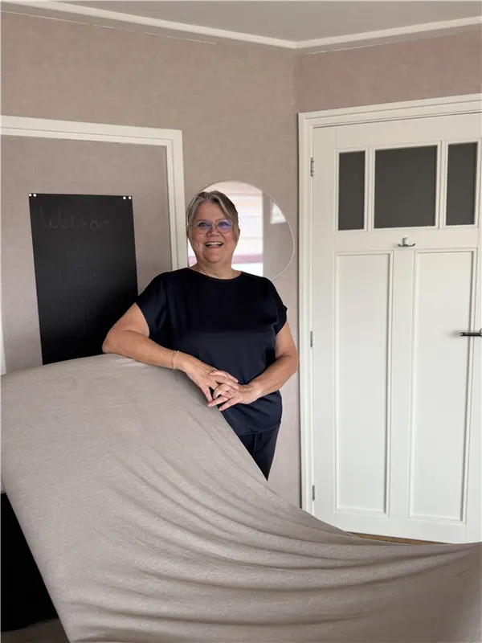
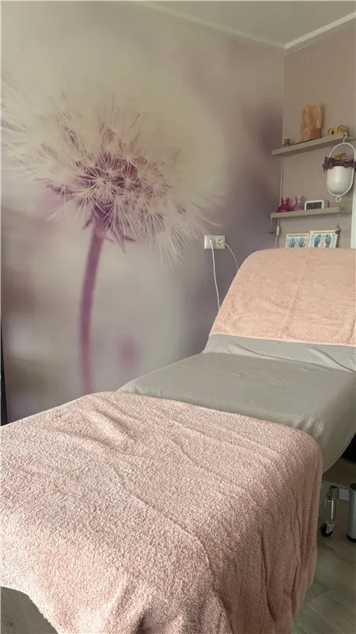
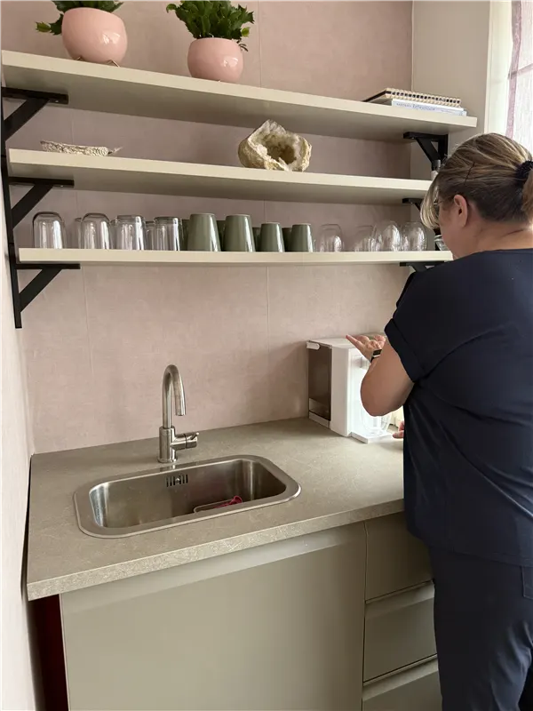

Mijn missie: mensen helpen
Mijn naam is Anja van Lanen, oprichter van Studio Anja, praktijk voor voetreflextherapie en holistische massage in Uden. Tijdens een lange zoektocht naar mijn pad in het leven, wist ik het antwoord eigenlijk al: mensen helpen. Door de jaren heen kreeg ik vaak te horen van mensen hoeveel ze hadden gehad aan mijn luisterend oor, zonder oordeel, maar ook aan het advies of gewoon de aandacht die ik hen gaf. Dat inzicht werd de basis waar Studio Anja voor staat.


Mijn opleiding en ontwikkeling
Vanaf het moment dat mijn richting duidelijk werd, ging alles in een stroomversnelling. Ik rondde mijn opleidingen tot voetreflextherapeut en holistisch masseur met succes af, en blijf mezelf continu ontwikkelen via nascholingen en verdiepingsdagen. Zo blijft mijn kennis actueel en kan ik jou de beste behandeling bieden.
Mijn praktijk: rust en reinheid
Met veel liefde en enthousiasme heb ik mijn praktijkruimte in Uden ingericht: een plek waar rust en reinheid centraal staan. Bij Studio Anja mag je helemaal tot rust komen en jezelf zijn. Of je nu lichamelijke klachten hebt die ik kan helpen verlichten of verminderen, of gewoon behoefte hebt aan ontspanning en/of een luisterend oor, bij mij ben je welkom.
Bekijk de behandelingenMijn missie is simpel: jou na iedere behandeling heerlijk ontspannen naar huis laten gaan, met meer rust in je lijf en hoofd.
Anja van Lanen